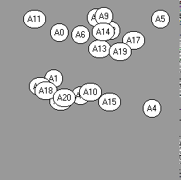

We set out to create a model where guests at a party desire to mingle
with other guests. Guests had an inclination to spend varying amounts
of time with each other guest. Once the party begins they seek out
the person within their vision who they are most attracted to. As
guests interact their inclination to spend additional time with each other
diminishes. Once guests run out of people they are attracted to,
they leave the party.
Model:
The party takes place in a 100 x 100 room with 21 guests.
Each guest has:
Level of attraction (randomly distributed) to each other guest.
Vision (constant for all guests).
Contact distance (constant for all guests).
Attraction decay rate (constant for all guests).
Position in the room (initial position set randomly).
Each period every guest:
1. Looks around to see who is within their vision.
2. If no one within vision has positive attraction, leave the party.
3. If someone with positive attraction is within sight, move toward most attractive guest until within
contact distance.
4. If no one within contact distance is attractive, move the opposite direction of the person you were
talking to.
5. Decrease your attraction to all people within contact distance.
In the simulation below, twenty-one guests are randomly distributed
in the room. They each implement the five steps described above.
Early in the party, guests cluster into large groups. After some
time, people tire of talking to the people in their group and spread out.
New groups form, converse, and decay. When guests are unable to find
someone interesting in their vision, they leave the party.
